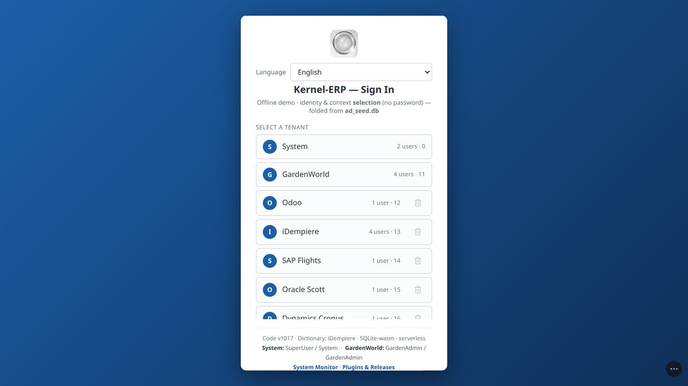
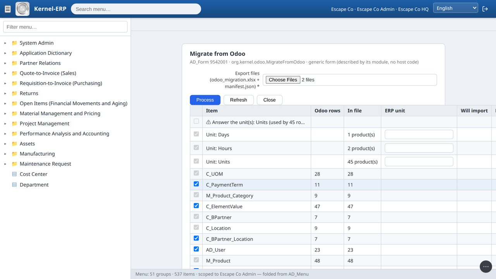
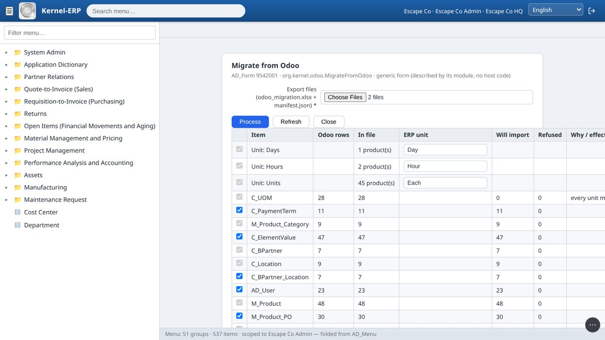
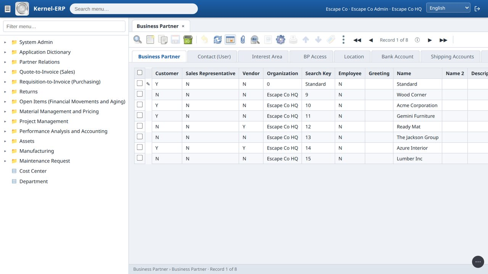
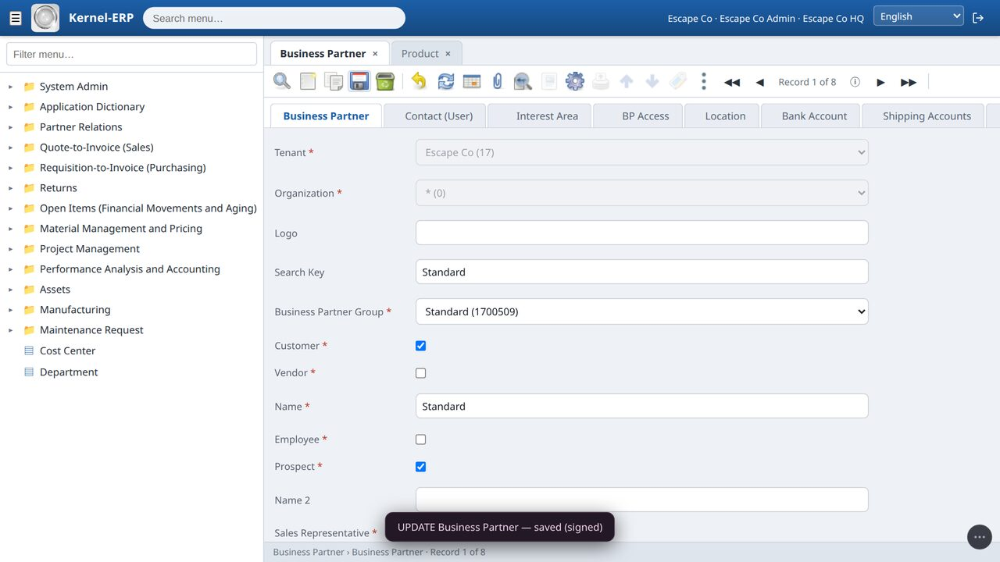
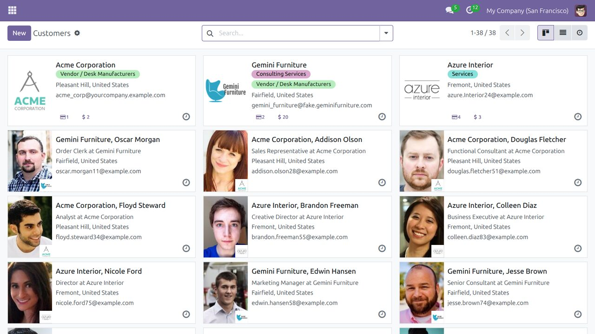
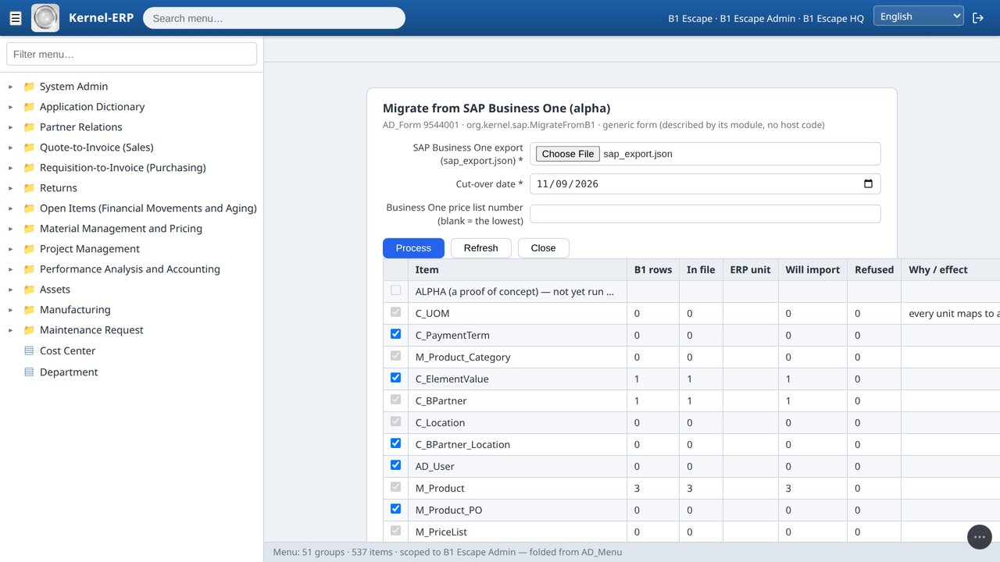
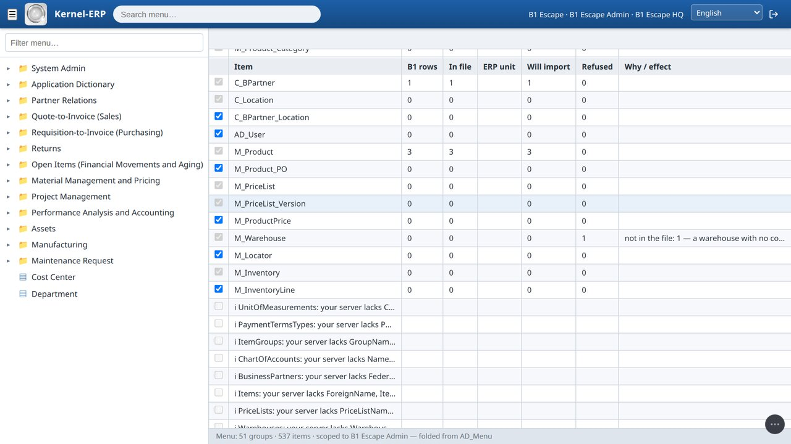
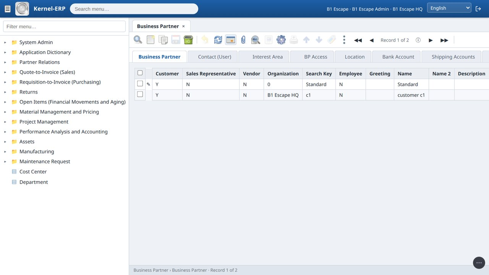

Migration User Guide — move your company into the Kernel ERP¶
One guide for every source. You run a small tool next to your old system, or export a file from it. The ERP reads that file in your browser, shows you a summary before anything is written, and then loads it all at once or not at all. Nothing is uploaded, and your old system is only ever read. How it works and what is proven: Moving from Odoo — how it works · the main guide: Kernel-ERP User Guide.
Choose your source¶
| From | How the data leaves it | Status | Film |
|---|---|---|---|
| Odoo 17 | the Odoo agent reads your Odoo and writes odoo_export/ |
tested on Odoo 17's demo company | How to escape from your Odoo |
| Dynamics 365 Business Central | Business Central's own Excel export (a configuration package) | alpha: tested on Microsoft's demo company, not yet on a real company's file | How to escape from your Business Central |
| SAP Business One | the SAP agent reads your Service Layer and writes sap_export.json |
alpha: tested only on the example records in SAP's own guide | How to escape from your SAP Business One |
| iDempiere | the iDempiere agent (node migrate_agent.js --masters) writes ad_masters.db |
see the ERP guide, §2 | — |
What moves (all sources): master data and opening stock, at a cut-over date: customers and vendors with contacts and addresses, products, units, categories, payment terms, prices, the chart of accounts, warehouses and locators. Not yet: balances, open invoices and open orders, and closed history.
Alpha means the route was built from what the vendor publishes, and has not yet run on a real company's data. Every alpha run writes an alpha report: counts and field names only, with every value masked. Please send it back. That is what turns an alpha into a tested route.
The same three steps for every source¶
Step 1 — Get your data out of the old system¶
This is the only step that differs per source. See Odoo, Business Central or SAP Business One below.
Step 2 — Your own company in the ERP, and the plugins (once)¶
- Log in as System → Plugins & Releases → press Start on Ninja data migration (Migrate Excel Data) and on the migration for your source (Migrate from Odoo, Migrate from Business Central (alpha) or Migrate from SAP Business One (alpha)).
- Still as System: menu Initial Tenant Setup → fill in the company details → Create tenant. It is set up the way iDempiere's Initial Client Setup sets one up (trees, accounting, a default partner group and tax category, the standard warehouse). The new company appears on the login screen.
- Created the company before starting the plugins? Still as System, run Role Access Update (System Admin → General Rules → Security → Role Access Update) with Reset Access = No: the same process iDempiere uses after installing a plugin. Every role then gets the new screens its level allows.

Step 3 — Migrate, in the ERP¶
- Log in as your new company's administrator → menu Data Import → Migrate from … (your source).
- Pick the file(s) from Step 1, and the cut-over date where the form asks for one. The browser reads them on your machine.
- Units: where the source's units have no ERP code, pick the ERP unit for each from the list in its cell (for example Units →
Each, Hours →Hour). When the source gives an international code, the matching ERP unit is suggested.

- Press Refresh. The summary is a dry run of the real import: for every table, how many rows the source has, how many will import, how many would be refused and why, including rows the conversion itself could not use ("not in the file: …"). Notes about your data are listed under the tables. Nothing is written yet. Untick what you do not want; a table another ticked table needs stays ticked.

- Press Process. Everything goes in at once, or nothing does: one signed change set. The form says what it migrated.
- Check it: open Business Partner and Product from the menu (the Find window opens first: press OK). Your records are there, in the ERP's own windows.

Working offline, and with your team. The ERP and your data live in this browser, so it keeps working with the internet off (in the recorded runs a record was edited and saved with the network cut, and the page made 0 network requests). To share with colleagues, open the Team panel and press Start a team; each device then sends only its signed changes through a relay (a post box, not a server). See the team guide.

Refused in the ERP (all sources):
- "Answer the unit(s)": a unit a product uses has no ERP unit picked yet (Step 3.3).
- "The manifest is for … / Sheet … has N rows; the manifest says M": the files do not belong together. Pick them from the same export.
- "… ambiguous": a lookup matches two rows in your company (for example two price-list discount schemas of type P). Today the run is refused.
- A second Process is refused: the data is already there (unique names and codes).
Odoo¶
Before you start: any computer with Node.js 16 or newer that can reach your Odoo (the Odoo machine itself, or your laptop for Odoo.sh / Odoo Online). An Odoo login that can read accounting and stock (an administrator). If your Odoo asks for a 2-step code, make an API key (your Odoo profile → Account Security → New API Key) and use it as the password.
- Download
odoo_agent.zipfrom the ERP (About → DIY, the Odoo agent) and unzip it. - Run:
For Odoo.sh / Odoo Online (or any Odoo on https):
cd odoo_agent node export.js --host localhost --port 8069 --db yourdb --login admin --cutover 2026-12-31node export.js --url https://mycompany.odoo.com --db mycompany --login me@mycompany.com. It asks for the password or API key (it is never a flag).--cutoveris the date your opening stock is counted at (default: today). - Several companies in one Odoo? The export moves the company your login opens on, and ends by printing the command for each other company (
--company 2…). Each one becomes its own ERP company. - Your Odoo version is checked first: the export is written for Odoo 17; on another version it stops, names the field it misses and writes nothing.
- When it ends with PASS you have
odoo_export/withodoo_migration.xlsx(one sheet per ERP table),manifest.json(how many rows Odoo has of each: the proof nothing was dropped) andprovenance.json(each row → its Odoo record). If it ends with FAIL, nothing is written and it says why. - In Step 3, pick
odoo_migration.xlsxandmanifest.json. Odoo's units have no ERP code: pick each one.
What the export settles for you (listed in manifest.json): archived customers, products and locations come along inactive; repeated codes: the older
keeps it, the other becomes CODE-<odoo id>; a code longer than the ERP field is shortened and keeps ~<odoo id>; an address with no country gets your Odoo
company's country.

Refused in the export: "FAIL auth": check the login, the password (an API key with a 2-step code) and --db · "FAIL access: the Odoo user cannot read …":
use an administrator · "FAIL version: Odoo … has no …": this Odoo version is not supported yet · "FAIL company: no company with id …": it lists the companies;
run again with one of their ids.
Not moved yet: balances and the trial balance at the cut-over, open invoices and orders, lots and serial numbers (stock is summed per product and location), vendor price breaks, instalment payment terms, closed history. Odoo apps outside trade and accounting (manufacturing, HR, POS …) arrive as plugins.
Business Central (alpha)¶
Built without a running Business Central. Everything it knows was read from Microsoft's published source (microsoft/BCApps, MIT licence): every table, field, length and option it reads, and the exact layout of Business Central's Excel export. Tested on Microsoft's own demo company (all 575 rows loaded), not yet on a file exported by a real Business Central.
Step 1 in Business Central — one configuration package, exported to Excel. No extension, no credentials, no API: this is Business Central's own RapidStart tool.
- Search for Configuration Packages → New. Give it a code (for example
TO-KERNEL). Leave Language ID empty (English captions and plain ISO dates read best). - In Tables, add these Table IDs (or use Get Tables):
| Table ID | Table | Needed for |
|---|---|---|
| 18 | Customer | customers |
| 23 | Vendor | vendors |
| 222 | Ship-to Address | extra customer addresses |
| 27 | Item | items and their sale price |
| 5722 | Item Category | item categories |
| 204 | Unit of Measure | units |
| 99 | Item Vendor | vendor item numbers |
| 3 | Payment Terms | payment terms |
| 15 | G/L Account | chart of accounts |
| 14 | Location | warehouses |
| 7354 | Bin | bins |
| 32 | Item Ledger Entry | opening stock |
| 79 | Company Information | the country of addresses that have none, the address of locations that have none |
| 98 | General Ledger Setup | the currency (required) |
- Choose Export to Excel. Keep the file. In Step 3, pick it and set the cut-over date (opening stock is the item ledger up to it). A unit whose International
Standard Code matches an ERP unit is suggested (for example
PCS, codeEA→ Each).
What it settles for you (in the summary): a customer and a vendor sharing a number → the vendor becomes <No.> (Vendor); an address with no country → the
company's country; a location with no address → the company address; an item with no category → your company's default category (as iDempiere's own product import
does); text longer than the ERP field is cut the way iDempiere cuts it, a cut code keeps ~<n>; stock with no location → a warehouse named BC-NOLOC; a bin whose
location is not in the package is refused, and listed.
Not yet: balances, open documents, price list lines and discounts, item variants and lot numbers, dimensions.
Alpha report: lines starting with §BC-ALPHA in the browser console (F12 → Console): the tables your file held and their row counts, which column headers were
recognised and which were not (for example a non-English caption), rows per ERP table, what was refused and why, every value masked as "…".
SAP Business One (alpha)¶
SAP publishes no openly licensed data model for Business One, so this route reads the model from the one place it is published: your own server. The agent asks your Service Layer for its own description (
$metadata) and checks every field against it before reading; a field your server does not have is named, never guessed. Tested only against a local stand-in answering with the example records printed in SAP's guide Working with SAP Business One Service Layer (one customer, three items, one warehouse, one account), not yet on a real Business One. Released early on purpose: please run it and send the report back.
Why this route (checked before it was built, 2026-11-09):
- Business Central could be read from source, because Microsoft publishes its application code under the MIT licence. SAP Business One has no such thing: no openly licensed data model was found. SAP's sample repositories on GitHub are integration examples with no tables. The copies of the Service Layer model that people have posted were dumped from SAP servers and carry no licence.
- SAP DB was open source (GPL, October 2000 to 2007, later named MaxDB), but it is a database engine, not an application. Its source holds no business tables, and Business One never ran on it: Business One runs on Microsoft SQL Server or SAP HANA.
- What every Business One server does publish is its own model: the Service Layer's
$metadata. A tool you run against your server reads it there, so nothing SAP-licensed ships from us, and the field list is your server's own, version and add-ons included. - The engine point still helps: the Service Layer is a layer over the company database's tables (SAP's guide prints its own SQL:
OCRD,OITM,ORDR). That is where the one thing the Service Layer does not say, an account's asset, liability or equity class, can be read next.
What is proven so far (witness logs, erp/tests/witness_sap_migrate.js and witness_sap_migrate_live.js):
- The agent logs in, reads the model, counts each set and pages through it to the end. Every call is a read; the test server refuses any call without the session cookie.
- When the test server lacks a field, the agent names it and does not ask for it.
- On a new company, Process writes exactly what the summary predicted, in all 17 tables: 1 customer, 3 items and 1 account from SAP's examples, in one signed change set. The refused warehouse shows on the summary with its reason. The alpha report contains none of the values. On the real page: 11 of 11 checks.
- Not judged yet (10 rules): addresses, contacts, vendors and leads, payment terms, units by international code, item groups, price list and currency, bins, opening stock, revenue and expense accounts. SAP's guide prints no record they apply to, so a real company's run judges them.
Before you start: a computer with Node.js 18 or newer that can reach your Service Layer (no npm install: the agent has no dependencies). A Business One
user that can read business partners, items, accounts and warehouses.
- Download
sap_agent.zipfrom the ERP (About → DIY → SAP B1 (alpha), or red1oon.github.io/bim-ootb/erp/sap_agent.zip) and unzip it. - Run:
cd sap_agent node agent.js --url https://your-server:50000 --company YOURCOMPANYDB --user manager --insecure --url: your Service Layer address (the agent adds/b1s/v1).--company: the company database you log in to.--insecure: only if your Service Layer uses Business One's self-signed certificate.- The password is asked for (hidden), or set
SAP_PASSWORD. It is never a flag. - It logs in, reads, logs out, and writes
sap_export.json. Read only: every call it made is listed in the file (manifest.calls) andmanifest.read_onlysaystruewhen nothing but reads (and the log in / log out) was sent. It prints§SAP-AGENTlines (counts per set) and§SAP-FIELDlines (fields your server lacks). - In Step 3, pick
sap_export.jsonand set the cut-over date. Optionally type the Business One price list number to load (blank = the lowest number).

What it reads: units of measure, payment terms, item groups, chart of accounts, business partners (with addresses and contact persons), items (with prices and stock per warehouse), price lists, warehouses, bin locations.
What it settles for you (in the summary): a lead (card type L) is not a customer or vendor and is refused, counted; a frozen or not-valid partner or item comes along inactive; an item without an inventory unit gets your company's default unit (as iDempiere's own product import does); an item without an item group gets the default category; labour and travel items are services; fixed-asset items are refused (assets are not core); a warehouse with no country, when the company country cannot be read, is refused with its reason rather than stopping the load.

Known limits (alpha):
- Balance-sheet accounts get the ERP default type: the Service Layer's account record says revenue, expense or other, not asset, liability or equity. That class lives in the company database's account table; reading it is the next step.
- Stock is the stock now (the Service Layer gives no stock at a date), dated at the cut-over.
- One sale price list per run. No balances, open documents or history.
Alpha report: the agent's own §SAP-AGENT / §SAP-FIELD lines, and the §SAP-ALPHA lines in the browser console (F12 → Console) after Refresh: the sets your server
gave, their counts, the fields it lacked, rows per ERP table, refusals, every value masked. Copy and send them.
